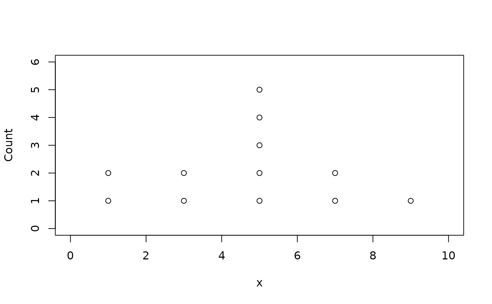

Dot plot (histograms)
Usage
dotplot(
x,
breaks = "Sturges",
xlim = NULL,
ylim = NULL,
plot = TRUE,
xlab = NULL,
ylab = "Count",
...
)Examples
dotplot(c(1,2,3,3,5,5,5,5,6,7,7,9))

#> $breaks
#> [1] 0 2 4 6 8 10
#>
#> $counts
#> [1] 2 2 5 2 1
#>
#> $density
#> [1] 0.08333333 0.08333333 0.20833333 0.08333333 0.04166667
#>
#> $mids
#> [1] 1 3 5 7 9
#>
#> $xname
#> [1] "x"
#>
#> $equidist
#> [1] TRUE
#>
#> $stacks
#> x Count
#> 1 1 1
#> 2 1 2
#> 3 3 1
#> 4 3 2
#> 5 5 1
#> 6 5 2
#> 7 5 3
#> 8 5 4
#> 9 5 5
#> 10 7 1
#> 11 7 2
#> 12 9 1
#>